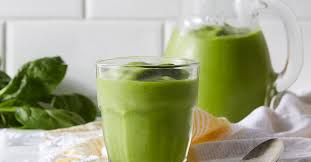
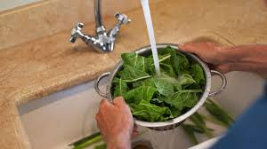
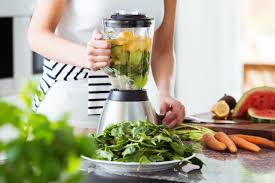

Aquí tienes la receta paso a paso para hacer un smoothie verde fresco y saludable.

Ingredientes:
1 taza de espinacas frescas (puedes usar acelga o kale también)
1 plátano maduro (le dará cremosidad y dulzura natural)
1/2 manzana verde (opcional, para un toque ácido)1/2 manzana verde (opcional, para un toque ácido)
1/2 taza de piña congelada (o mango, para darle un toque tropical)1/2 taza de piña congelada (o mango, para darle un toque tropical)
1 taza de leche vegetal (almendra, coco, avena, etc.) o agua
Jugo de 1/2 limón (opcional, para un toque fresco)
1 cucharadita de semillas de chía o linaza (opcional, para un extra de fibra)
Hielo (opcional, si prefieres una textura más fría)
Paso a paso:
Prepara los ingredientes: Lava bien las espinacas y corta el plátano, la manzana y la piña en trozos
pequeños para facilitar el licuado.

Agregar al licuador: Coloca las espinacas, el plátano, la manzana, la piña (o mango), y la leche
vegetal (o agua) en la licuadora. Si deseas, agrega el jugo de limón y las semillas de chía o linaza
para añadir más nutrientes.
Licuar: Licúa a alta velocidad hasta que todos los ingredientes estén bien combinados y el smoothie
tenga una textura suave y cremosa. Si prefieres una consistencia más líquida, puedes agregar más
leche vegetal o agua.

Ajustar sabor: Prueba el smoothie y ajusta el sabor si lo deseas. Puedes agregar más plátano para
dulzura, más limón para frescura, o incluso más espinacas si prefieres más sabor verde.
Servir: Vierte el smoothie en un vaso, agrega hielo si lo deseas, y ¡está listo para disfrutar!
Este smoothie verde es rico en vitaminas, minerales y antioxidantes, además de ser refrescante y
energizante. ¡Perfecto para comenzar el día con energía!